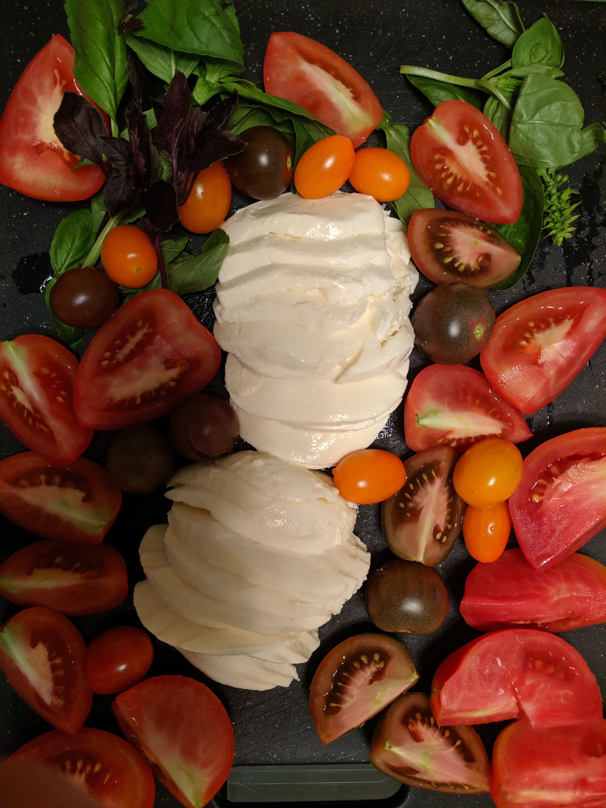

Tomato-Mozzarella Snack

Description
When it is tomato season, here's an option for you how you can consume many tomatoes and enjoy it!
Ingridients
- Tomatoes!
- Mozzarella (or Burrata)
- Fresh Basil Leaves
- Balsamic Vinegar
- Salt
- Extra Virgin Olive Oil
Steps
- Cut tomatoes to bite size.
- Slice mozzarella.
- Serve on a big plate or a cutting board.
- Add basil leaves.
- Drizzle balsamic vinegar on mozzarella.
- Sprinkle tomatoes with salt and drizzle with some olive oil.
And Voila! Your tomato snack is ready!